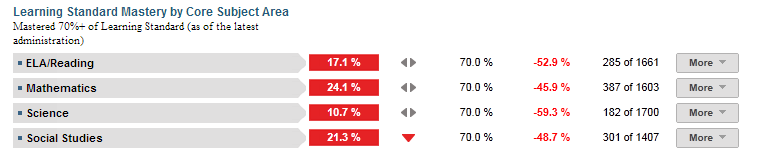

Dashboard Metrics


Learning Standard Mastery by Core Subject Area
Background
Campus Dashboard Metrics
Benchmark assessments are assessments administered periodically throughout the school year, at specified times during a curriculum sequence, to evaluate students’ knowledge and skills relative to an explicit set of longer-term learning goals. The design and choice of benchmark assessments is driven by the purpose, intended users, and uses of the instruments. Many benchmark assessments are aligned with the state curriculum and standards. Benchmark assessment can inform policy, instructional planning, and decision-making at the classroom, school and/or district levels.
Primary Metric
- Learning Standards Mastery by Core Subject Area: the percentage of students mastering a given threshold of learning standards on a benchmark assessment.
Related Metrics
- Benchmark Performance: the percentage of students meeting a given threshold on a benchmark assessment.
- Falling Course Grade: percent of students with a core course grade, as of the most recent grading period, that dropped 10% or more from the grading period prior to the most recent.
- Course Grades Below C Level: percent of students with one, two and three or more course grades below C as of the most recent grading period.
- Repeat Courses: percent of students repeating a course due to course failure.
- State Assessment Performance: percent of students passing state assessment in all tested subjects: reading/ELA, writing, math, science and social studies at the applicable grade levels and for all tests. Aggregated performance on alternative tests, including those for special education and Limited English Proficient students, is also reported.
User Interface
Dashboard Example
Figure 1 shows the Benchmark Assessment metric as seen on the campus dashboard.

Figure 1 Ed-Fi Learning Standards Mastery Metric
Status Definition on the Dashboard
The Status indicator is determined by campus-specific thresholds (campus goals) which are set at the district level. The Ed-Fi default threshold is 70% of students meeting the standard for each subject.
Metric Indicators | Comparisons | |||
Metric Name | Sub-metric Name | Metric Status Indicator | Trend | Campus Goal (Delta) |
Learning Standards Mastery by Core Subject Area | ELA/Reading | Red (Percentage) = if percentage of students who mastered less than 70% of the learning standards is greater than the campus goal Green (Percentage) = if percentage of students who mastered greater than or equal to 70% of learning standards is greater than the campus goal | Campus goal and the calculated percentage of students meeting the mastery standard | |
Mathematics | Red (Percentage) = if percentage of students who mastered less than 70% of the learning standards is greater than the campus goal Green (Percentage) = if percentage of students who mastered greater than or equal to 70% of learning standards is greater than the campus goal | Campus goal and the calculated percentage of students meeting the mastery standard | ||
Science | Red (Percentage) = if percentage of students who mastered less than 70% of the learning standards is greater than the campus goal Green (Percentage) = if percentage of students who mastered greater than or equal to 70% of learning standards is greater than the campus goal | Campus goal and the calculated percentage of students meeting the mastery standard | ||
Social Studies | Red (Percentage) = if percentage of students who mastered less than 70% of the learning standards is greater than the campus goal Green (Percentage) = if percentage of students who mastered greater than or equal to 70% of learning standards is greater than the campus goal | Campus goal and the calculated percentage of students meeting the mastery standard | ||
(a) For each subject, the Value column displays the number of students who have gotten 70% or more of cumulative learning standards correct as of the latest administration / the number of students who have taken at least one benchmark assessment
Trend Definition
Trend Indicators: Objective is to indicate Learning Standard Mastery | |||
| Up green | If the value for the current time frame is more than 5 percentage points higher than the prior time frame, then display a gray arrow trending upward. | |
| Unchanged | If the value for the current time frame is less than or equal to 5 percentage points higher or less than or equal to 5 percentage points lower, then display two gray arrows pointing outward indicating no direction. | |
| Down red | If the value for the current time frame is more than 5 percentage points lower than the prior time frame, then display a gray arrow trending downward. | |
The trend does not show for the first occurrence of a time frame since data is not available.
Delta Definition
The Delta column displays the absolute value of the difference between the campus percentage (Status column) and the campus goal percentage (Campus Goal column).
Delta Indicators: Objective is to indicate Learning Standard Mastery | |||
Metric Name | Sub-Metric Name | Campus Goal | Delta |
Learning Standards Mastery | ELA/Reading | Set campus goal | Red (Delta Percentage) = if the campus learning standards mastery percentage is less than the campus goal Black (Delta Percentage) = if the campus learning standards mastery percentage i s equal to or gr eate r than the campus goal |
Mathematics | Set campus goal | Red (Delta Percentage) = if the campus learning standards mastery percentage is less than the campus goal Black (Delta Percentage) = if the campus learning standards mastery percentage is equal to or greater than the campus goal | |
Science | Set campus goal | Red (Delta Percentage) = if the campus learning standardsmastery percentage is less than the campus goal Black (Delta Percentage) = if the campus learning standards mastery percentage is equal to or greater than the campus goal | |
Social Studies | Set campus goal | Red (Delta Percentage) = if the campus learning standards mastery percentage is less than the campus goal Black (Delta Percentage) = if the campus learning standards mastery percentage is equal to or greater than the campus goal | |
Periodicity
Recommended Load Characteristics | |
Calendar | Throughout the Year |
Frequenc y of data load | Twice a year |
Latency | School Year |
Interchange schema | Interchange-StudentAssessment.xsd |
Tooltips
The standard tool tips for the metric definition, column headers, and help functions display for this metric.
 is ‘No change from the prior period'
is ‘No change from the prior period' is ‘Getting worse from the prior period’
is ‘Getting worse from the prior period’ is 'Getting better from the prior period'
is 'Getting better from the prior period'
Data Anomalies
Anomalies
- Previous year and current year state assessment versions must be handled for learning standards objective mappings
- Late enrollees may have taken Benchmark Assessment tests at their previous school
- Loading of data from multiple administration dates
Footnotes
An icon appears next to any metric where students have been excluded. When the user hovers over the icon, count of students who have been excluded appear in a tooltip with the reason(s) for exclusion. By clicking on the icon, the data administrator will link to the data administrator’s page for more detail.
Best practice is to exclude and footnote students based on the following criteria:
- Missing data
Date of Refresh
Best practice is for the date of last data refresh to appear next the metric in the following format:
- (Through April 2010) –container level
- (05/10) – granular level
Implementation Considerations
Student Identity
Maintaining a correct and consistent student identity is at the center of any education data system. Most systems use some sort of unique identifier. However, sometimes this identifier is entered incorrectly or sometimes different systems use different identifiers.
The UDM XML supports the interchange of multiple types of identifiers. The StudentReference is a complex type within the UDM to maintain the referential integrity of the student (that is, ensuring that the data associated with each student is accurately associated with the right student). The complex type of the student reference assists with implementing the accurate matching algorithm to identify a student by utilizing any of the individual attributes (e.g., Student Unique State ID, Student ID, Campus Local ID (with Campus ID), Name and Birth Date). For example, if the Student Unique State ID is unknown, you can find the student’s identity by their Student ID, First Name, Last Name and Birth Date.
Reporting Different Versions Benchmark Assessments
Best practice is for developers to report the different test versions for students separate metrics. A student may, in any single grade level, take different versions of a state assessment test for different subjects and these should be distinguished so an educator can track progress of students.
Reporting Retakes of the Same Benchmark Assessment Test
Currently the metric reports the most recent result for a given benchmark assessment test by type, grade level, and subject. Alternatively, developers may show results for each time a test is taken within a school year to track the success of students retaking tests.
Loading of Current Year Benchmark Assessments for Consistent Display
The system currently computes the metric for the cohort based upon the last Benchmark Assessment taken by each student. Best practice is to load a new year’s state assessment all at once in order to maintain the consistency of the metric.
Changes in State Assessments
If states are undergoing changes in assessment standards and/or tests, it may impact the way that current and longitudinal data is presented.
State Assessment Test Scores
State assessment has four types of test scores:
- raw scores - number of correct items
- scale scores - converts the raw score to a standard scale that accounts for different levels of difficulty in questions
- vertical scores - enables the comparison of a student's score in one grade with the student's score in the next grade for the same content area. Vertical scores are provided only for reading and math in grades 3 through 8.
- horizontal score - enables direct comparisons of performance across different test administrations within a grade and subject area, but not across grades or subjects. This score is used for grades 5 and 8 science, grades 4 and 7 writing, grade 8 social studies and all EOC assessments.
Assuming that cut scores (or guidance on cut scores) are available, Ed-Fi is able to test some level of reporting on state assessment during the final quarter of pilot testing. The first set of state assessment 3rd through 8th grade results may not be available until after the pilot period because performance standards will not be set until October 2012.
Ed-Fi plans to create an algorithm that enables a visual comparison between state assessment and state assessment data by using cut score thresholds.
State Assessment Standardized Test Scoring Levels
For academic performance levels, there are two primary state assessment cut levels: "proficient/satisfactory" and "advanced." Two possible additional levels, "insufficient" and "limited" are not yet approved by the commissioner. The "limited" level is intended to identify students who are "approaching" proficiency.
On the dashboards, the detail views for scale, vertical and horizontal scores are graphed. To display these detail graphs properly, cut scores must be available.
Aggregate Metric Inclusions and Exclusions of Special Education Students
Each campus's aggregate metrics may include or exclude the special education population, depending on the intended purpose for a specific metric and campus goal.
Drill Downs
The dashboards include the option to see more detail that is associated with a specific metric. Table 6 lists the drill down views that are recommended for this metric.
| Advanced Analysis | Break down of student test assessment (commended, not commended, met standard, and didn't meet standard) (Future Implementation) | |
| Grade Level | Graph of test assessment detail by grade level | |
| Student List | List of students who do not meet the threshold for this metric for the specified period. |